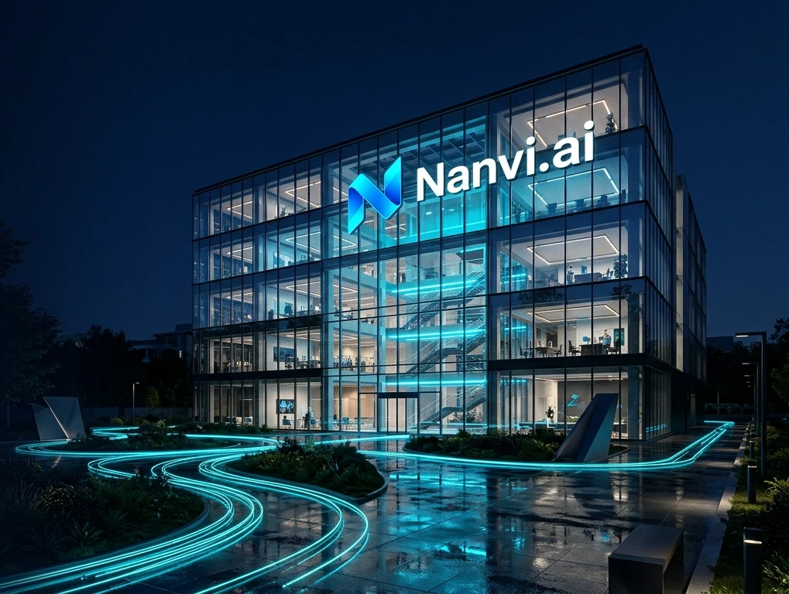

About Nanvi.ai
NANVI Technology Solutions LLC connects US client delivery in Plano, Texas with dedicated AI & robotics engineering in Chennai, India. Instead of building isolated prototypes, every robot runs on our shared NRIP stack—reusing perception, SLAM navigation, and safety controls across verticals.
Plano, TX HQ
Chennai, IN R&D
Shared NRIP Stack
